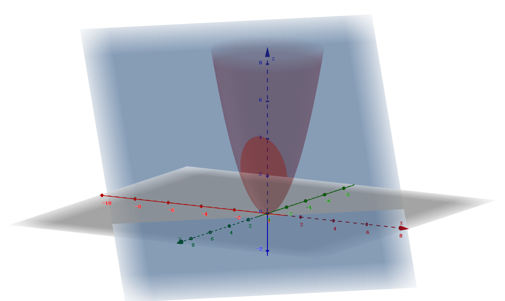

-
讨论 z=xy 在 (0,0) 的极值情况
解：A=fxx(0,0)=0，B=fxy(0,0)=1，C=fyy(0,0)=0，AC−B2=−1<0
∴ 在该点不取得极值
-
讨论 z=(y−x2)(y−2x2) 在 (0,0) 的极值情况
解：fx(0,0)=fy(0,0)=0
A=C=fxx(0,0)=0，B=fxy(0,0)=0，AC−B2=0，无法确定
∵ 在 U(0,0) 内总存在 f(x0,y0)>0，f(x1,y1)<0
∴z=f(x,y) 在 (0,0) 不取得极值
-
求 f(x,y)=2y2−x(x−1)2 的极值
解：fx=fy=0，驻点 (31,0) 和 (1,0)
fxx=−6x+4，fxy=0，fyy=4
A1=2，A2=−2，B1=B2=0，C1=C2=4
A1C1−B12=8>0，A1=2>0，取得极小值
A2C2−B22=−8<0，不取得极值
∴ 极值点 (31,0)，极值 f(31,0)=−274
-
求 z=x2y(4−x−y) 在 x+y=6、x轴、y轴所围成区域中最大值、最小值
解：驻点
{fxfy=2xy(4−x−y)−x2y=0=x2(4−x−2y)=0⇒{8−3x−2y4−x−2y=0=0⇒{x=2y=1
f(2,1)=4
边界点：
- x轴：y=0，f(x,y)=0
- y轴：x=0，f(x,y)=0
- 直线 x+y=6：f(x,y0)=2x2(x−6)，f′(x,y)=4x(x−6)+2x2=0，x=0或4，f(0,6)=0，f(4,2)=−64，f(6,0)=0
∴ 最大值 f(2,1)=4，最小值 f(4,2)=−64
-
证明周长为2p的三角形中，等边三角形面积最大
证：设三角形三边长为 x、y、z
z=2p−x−y
根据海伦公式有 s2=p(p−x)(p−y)(p−z)=p(p−x)(p−y)(x+y−p)=f(x,y)
⎩⎨⎧x+y>2p−x−yx−y<2p−x−yy−x<2p−x−y⇒D:⎩⎨⎧x+y>p0<x<p0<y<p
求驻点，{fx=p(x+y−p)+p−x=0fy=p(x+y−p)+p−y=0，x=y=32p，z=2p−x−y=32p∈D
∴(32p,32p,32p) 为唯一驻点，它是最大值点
-
求 {z=xyx+y=1 的极值
解：
-
[代入法]
- z(x)=x(1−x)，z′(x)=1−2x
- 令 z′(x)=0，x=21，此时 y=21
- 极大值 f(21,21)=41
-
[乘数法]
- 令 L(x,y,λ)=xy+λ(x+y−1)
⎩⎨⎧Lx=y+λ=0Ly=x+λ=0Lλ=x+y−1=0
- 解得 ⎩⎨⎧x=21y=21
- z=f(21,21)，它是极大值
-
x2+y2=z 被 x+y+z=1 截成椭圆，求椭圆到原点的最长、最短距离

解：
⎩⎨⎧f(x,y,z)=x2+y2+z2φ1(x,y,z)=x2+y2−zφ2(x,y,z)=x+y+z−1
设 L(x,y,z,λ,μ)=x2+y2+z2+λ(x2+y2−z)+μ(x+y+z−1)，则有
⎩⎨⎧2x+2λx+μ=02y+2λy+μ=02z−λ+μ=0x2+y2−z=0x+y+z−1=0
解得 x=y=2−1±3，z=2±3
∴ 最小值为 f(23−1,23−1,2−3)=9−53，最大值为 f(2−1−3,2−1−3,2+3)=9+53
∴ 所求距离的最大值为 9+53，最小值为 9−53